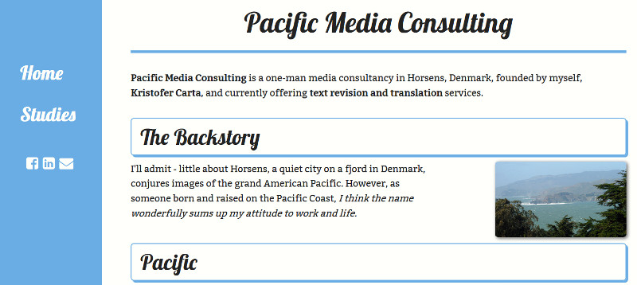

VIA Web Society
Meeting #8: Birth of a Website
Meeting Schedule:
- Overview of Changes
- Live Coding!
Changes:
- Casual hangouts before and after meetings
- Work on website has officially begun
- Fixed rotation for meeting types:
- Code session
- Presentation (member/guest)
- Code session
- Movie night (beer, popcorn, etc.)
Building a Website
The goal:
Make a simple portfolio site totally from scratch, and quickly.
Basic Steps
- Identify problem and requirements
- Research and create content
- Mark up in HTML
- Design (in browser) with CSS
(This is just one process, and a bare-bones one at that - you'll find many, many variations in the real-world!)
1. Identify problems/requirements
Problem:
I need a better portfolio site. I have a personal site, but it's mixed with a bunch of stuff about my soon-to-be-dead company and needs to be rewritten.
Requirements
- Needs to display some of my work
- Needs to include social media links
- Should borrow font and images from personal site
2. Content creation
Get all content into plain text.
Make sure it reads clearly, and has natural structure and hierarchy (without the benefit of HTML/CSS)
I've done the research/planning phase ahead of time in order to not have to show it here, but know this is a crucial and unavoidable step in the process!
3. Mark up in HTML
HTML is all about structuring content (hierarchy) and giving it meaning (semantics)
Design should always follow content. Get your content marked-up in HTML first, and make sure it already looks and feels like you want it to.
Don't use HTML for design purposes (i.e. skipping from h2 to h4 because of size), if you catch yourself doing this, step back and think about how your content is structured.
4. Design
Do whatever you need to do in order to plan out the design. Pen & paper, Photoshop, MS Paint, whatever rocks your world.
Design is like makeup. Put it on layer by layer, and don't get ahead of yourself.
As soon as you can, get out of the text editor and start using the browser tools. Work in the medium you're designing for!
Design tools checklist:
- Choice of CSS pre-processor
- Choice of browser with good dev tools
- Choice of web-focused text editor
- Choice of framework (best of all, roll your own)
- Tools for finding and optimizing images, fonts and icons
I'm going with SASS, Firefox, WebStorm, Bootstrap, Google Fonts & IcoMoon
(These aren't always my choices, use the right tool for the job)
Next steps:
- Refactor code
- Concatenate/minimize code and optimize images (*ahem*...use a task runner!)
- Make a pull request to the main repo
- Think about phase 2!
Homework!
- Make your own site!
- (It can be whatever you want, it doesn't need to be a portfolio site)
Thank you for coming!